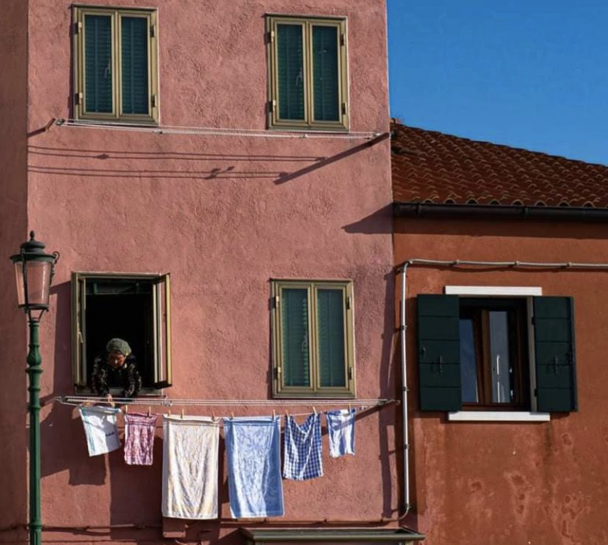
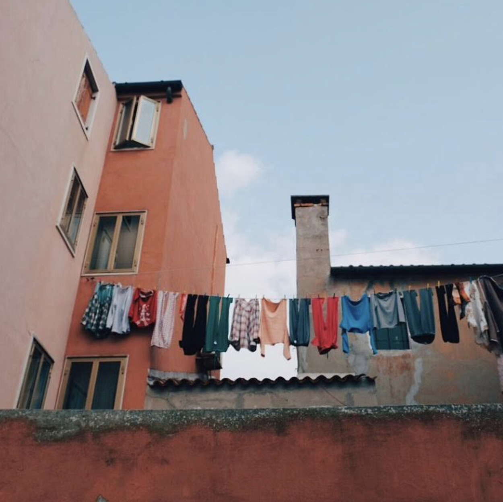
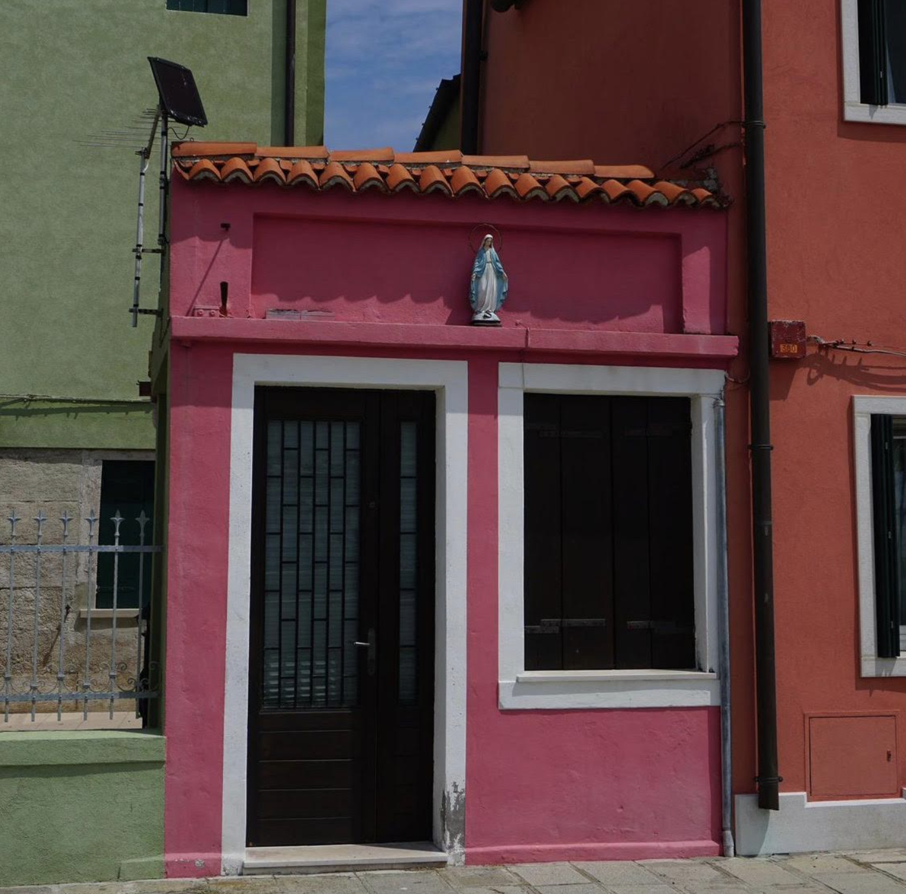
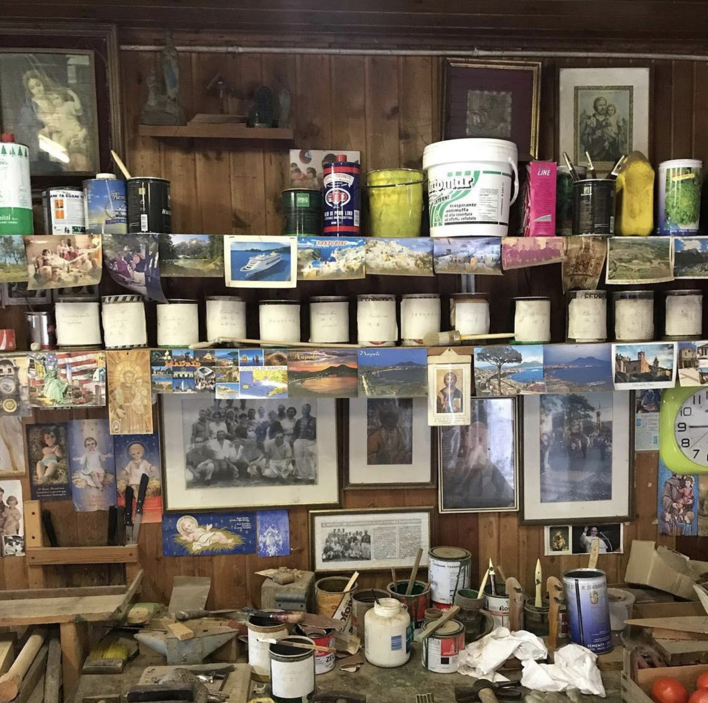

San Pietro is the north part of the island of Pellestrina, and it is the oldest part of your hometown, it is about 30 minutes by bike from your housecasa .

It is a very characteristic neighborhood where timetempo seems to have stopped, and filled by clothes hanging open air.
San Pietro is where a big part of the ancient populationpopolazione lives, extremely calm and silent.
And with a lot of cats.

San Pietro is also where you can visit a local painterpittore 's atelier: it is small, but interesting.
Also because it's the only one present.

San Pietro is where your close friend Caterina lives, and she'd like to say hello to you. But San Pietro is also close to Sandro's kiosk where you'd love to have something to eat. What do you feel like doing?